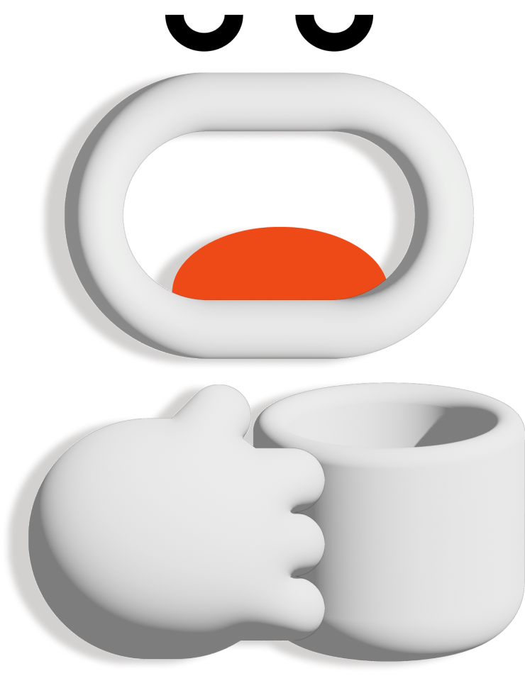

Great Job! You created...

TASTE
The Chinese character "品" (pronounced pǐn) is composed of three 口 (kǒu), which means "mouth." This character structure conveys the idea of multiple layers or aspects. In the context of "taste," 品 can refer to the quality, flavor, or grade of something, especially in terms of food or drink. It's about assessing and appreciating the subtle nuances and characteristics.